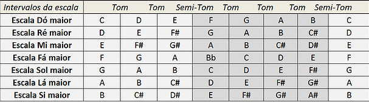

ESCALA MAIOR
a escala mais utilizada
O que é? Escalas musicais são sequências ordenadas de notas. Por exemplo: dó, ré, mi, fá, sol, lá, si, dó…repetindo esse ciclo. Nessa escala, começou-se com a nota dó e foi-se seguindo uma sequência bem definida de intervalos até o retorno para a nota dó novamente. Essa sequência de distâncias foi: tom, tom, semitom, tom, tom, tom, semitom…repetindo o ciclo.
Tabela
Contato
| number | perfil |
|---|---|
| (81) 98340-3332 | in/felipe-pontes-594229203/ |